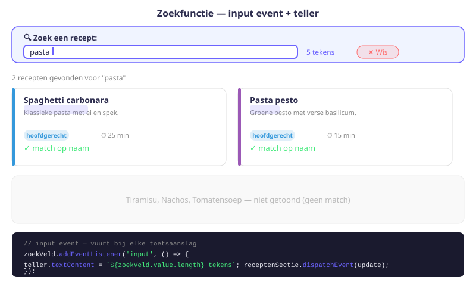
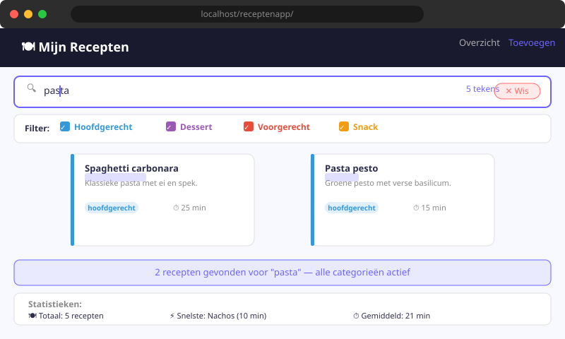

Receptenapp — Zoekfunctie
- Een zoekveld toevoegen aan een HTML-pagina en live updates triggeren via het
input-event - Een tekenteller bouwen die het aantal getypte tekens bijhoudt en weergeeft
- Zoeklogica combineren met bestaande filterlogica (categorie-checkboxes uit H13)
- De methode
toLowerCase()enincludes()gebruiken voor hoofdletterongevoelig zoeken - Een "geen resultaten"-melding tonen wanneer de gefilterde lijst leeg is
14.1 Zoekbalk toevoegen aan HTML
Open index.html. Voeg een zoekformulier toe boven de categorie-checkboxes:
<form class="zoektekst">
<label for="zoek-input">Zoek recept</label>
<input
type="text"
id="zoek-input"
placeholder="Typ een naam of beschrijving..."
autocomplete="off"
>
<small>Je hebt <span id="aantalLetters">0</span> tekens ingegeven.</small>
</form>Aandachtspunten:
autocomplete="off"zorgt dat de browser geen oude zoektermen voorstelt- Het
<small>-element metid="aantalLetters"toont de tekenteller - We gebruiken een
<label>voor toegankelijkheid

14.2 Tekenteller: live aantal tekens weergeven
We gebruiken het input-event op het zoekveld. Dit event vuurt af bij elke toetsaanslag — sneller dan change, dat pas afvuurt als het veld de focus verliest.
const zoekInput = document.querySelector('form.zoektekst input');
const aantalLettersEl = document.querySelector('#aantalLetters');
const telLetters = () => {
const n = zoekInput.value.length;
aantalLettersEl.textContent = n;
// Trigger ook de receptenlijst update
receptenSectie.dispatchEvent(update);
};
zoekInput.addEventListener('input', telLetters);| Event | Wanneer? | Gebruik |
|---|---|---|
input | Bij elke toetsaanslag | Live zoeken, live validatie |
change | Als het veld de focus verliest | Formuliervalidatie bij verzenden |
keyup | Na loslaten van toets | Vergelijkbaar met input, minder betrouwbaar |
Voor live zoeken gebruik je altijd het input-event.
14.3 toonRecepten() uitbreiden — combineer zoeken + filteren
We halen de zoekterm op, zetten hem om naar kleine letters (hoofdletterongevoelig zoeken), en controleren of de naam of de beschrijving van het recept de zoekterm bevat:
function toonRecepten() {
const zoekterm = zoekInput.value.toLowerCase();
const geselecteerd = maakCategoriesLijst();
// Leeg de receptensectie
receptenSectie.innerHTML = '';
alleRecepten.forEach(r => {
const inNaam = r.naam.toLowerCase().includes(zoekterm);
const inBeschrijving = r.beschrijving.toLowerCase().includes(zoekterm);
if ((inNaam || inBeschrijving) && geselecteerd.includes(r.categorie)) {
voegReceptToe(r);
}
});
}Waarom toLowerCase()?
Als de gebruiker "PASTA" typt, maar het recept heet "Pasta Bolognese", dan zou "Pasta Bolognese".includes("PASTA") → false zijn! Door alles naar kleine letters te zetten, los je dit op:
"Pasta Bolognese".toLowerCase() // → "pasta bolognese"
"PASTA".toLowerCase() // → "pasta"
"pasta bolognese".includes("pasta") // → true ✓14.4 Leeg zoekresultaat afhandelen
Wat als de gebruiker iets intypt dat nergens in de lijst voorkomt? We voegen een melding toe:
function toonRecepten() {
const zoekterm = zoekInput.value.toLowerCase();
const geselecteerd = maakCategoriesLijst();
receptenSectie.innerHTML = '';
// Filter de recepten
const zichtbaar = alleRecepten.filter(r => {
const inNaam = r.naam.toLowerCase().includes(zoekterm);
const inBeschrijving = r.beschrijving.toLowerCase().includes(zoekterm);
return (inNaam || inBeschrijving) && geselecteerd.includes(r.categorie);
});
if (zichtbaar.length === 0) {
// Geen resultaten: toon melding
const melding = document.createElement('p');
melding.className = 'geen-resultaten';
melding.textContent = 'Geen recepten gevonden. Pas je zoekterm of filter aan.';
receptenSectie.appendChild(melding);
} else {
// Toon de gevonden recepten
zichtbaar.forEach(r => voegReceptToe(r));
}
}We gebruiken nu alleRecepten.filter(...) om eerst alle passende recepten te verzamelen in de array zichtbaar. Dan bekijken we zichtbaar.length: als 0 → toon de melding, anders → toon de recepten. Dit is schoner dan inline filteren.
14.5 Volledige bijgewerkte script.js
// script.js — volledige versie na H14
import { updateLS } from './hulpfuncties.js';
let alleRecepten = JSON.parse(localStorage.getItem('opgeslagenRecepten')) || [];
const receptenSectie = document.querySelector('.recepten');
const checkboxes = document.querySelectorAll('input[name=categorie]');
const zoekInput = document.querySelector('form.zoektekst input');
const aantalLettersEl = document.querySelector('#aantalLetters');
const update = new CustomEvent('receptenUpdate');
receptenSectie.addEventListener('receptenUpdate', toonRecepten);
checkboxes.forEach(cb => {
cb.addEventListener('change', () => receptenSectie.dispatchEvent(update));
});
const telLetters = () => {
aantalLettersEl.textContent = zoekInput.value.length;
receptenSectie.dispatchEvent(update);
};
zoekInput.addEventListener('input', telLetters);
function maakCategoriesLijst() {
const geselecteerd = [];
checkboxes.forEach(cb => { if (cb.checked) geselecteerd.push(cb.value); });
return geselecteerd;
}
function voegReceptToe(recept) { /* ... zie H10 ... */ }
function verwijderRecept(naam) { /* ... zie H12 ... */ }
function toonRecepten() {
const zoekterm = zoekInput.value.toLowerCase();
const geselecteerd = maakCategoriesLijst();
receptenSectie.innerHTML = '';
const zichtbaar = alleRecepten.filter(r => {
const inNaam = r.naam.toLowerCase().includes(zoekterm);
const inBeschrijving = r.beschrijving.toLowerCase().includes(zoekterm);
return (inNaam || inBeschrijving) && geselecteerd.includes(r.categorie);
});
if (zichtbaar.length === 0) {
const melding = document.createElement('p');
melding.className = 'geen-resultaten';
melding.textContent = 'Geen recepten gevonden. Pas je zoekterm of filter aan.';
receptenSectie.appendChild(melding);
} else {
zichtbaar.forEach(r => voegReceptToe(r));
}
}
toonRecepten();Oefeningen
Implementeer de volledige zoekfunctie in je Receptenapp:
- Voeg de HTML-zoekbalk toe aan
index.html. - Implementeer de tekenteller in
script.js. - Pas
toonRecepten()aan om te zoeken op naam én beschrijving. - Combineer met de bestaande categoriefilter.

Voeg een extra filter toe: een input[type=number] waarmee de gebruiker een maximale bereidingstijd instelt:
<label>
Max. bereidingstijd:
<input type="number" id="max-tijd" min="1" max="240" value="240"> minuten
</label>Pas toonRecepten() aan: haal de waarde op met parseInt() en voeg een extra controle toe in de filter():
const tijdOk = r.bereidingstijd <= parseInt(maxTijdInput.value);
// Combineer alle drie de voorwaarden:
return (inNaam || inBeschrijving) && geselecteerd.includes(r.categorie) && tijdOk;Breid voegReceptToe() uit zodat de zoekterm gemarkeerd wordt in de receptnaam en beschrijving (gebruik het HTML <mark>-element).
Hint: gebruik String.prototype.replace() met een reguliere expressie om de zoekterm te omringen met <mark>...</mark>:
function markeer(tekst, zoekterm) {
if (!zoekterm) return tekst;
const regex = new RegExp(zoekterm, 'gi');
return tekst.replace(regex, match => `<mark>${match}</mark>`);
}Huistaak
Opdracht: Zoeken + filteren gecombineerd
Deel 1 — Zoekfunctie (4 punten)
- Implementeer de zoekbalk met tekenteller.
- Zoek op naam én beschrijving (hoofdletterongevoelig).
- Toon de "geen resultaten"-melding als er niets gevonden wordt.
Deel 2 — Tijdfilter (3 punten)
- Voeg het bereidingstijd-filter toe.
- Combineer zoeken + categoriefilter + tijdfilter in één
filter().
Deel 3 — Zoekterm markeren (3 punten)
- Markeer de zoekterm in de naam en beschrijving met
<mark>.
Vragenlijst
Controleer of je de leerstof van dit hoofdstuk begrijpt.
Waarom gebruiken we toLowerCase() bij het zoeken?
Wat is het verschil tussen het input-event en het change-event op een tekstveld?
In de zoeklogica gebruiken we (inNaam || inBeschrijving) && geselecteerd.includes(r.categorie). Wat betekent dit?
Waarom gebruiken we alleRecepten.filter(...) in plaats van direct in de forEach() te filteren?
Wat geeft "pasta bolognese".includes("pasta") terug?
Hoe haal je het aantal tekens op van de zoekterm in het invoerveld?